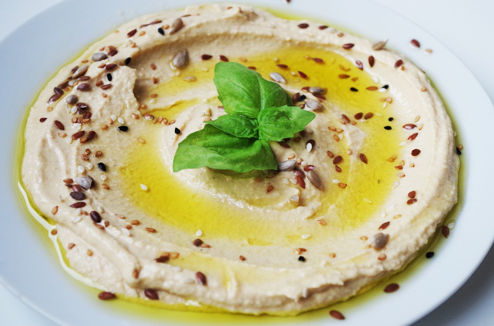

Hummus

Description:
Hummus is a delicious dip, made with chickpeas and Tahini. It can also be used as a spread on breat or a pita or a wrap.
Hummus is also rich in protein.
Ingredients:
- Chickpeas - 1 cup
- Tahini - 2 tablespoons
- Garlic - 5-6 cloves
- Lemon juice - from 1 lemon
- Salt - 3 teaspoons
- Black pepper - 3 teaspoons
- Olive oil - 2-3 tablespoon
- Water - 1-4 tablespoons (as needed)
Directions:
- Soak the chickpeas in water overnight. Drain the following day
- Boil in water for 2 hours
- Drain water and transfer chickpeas to a food processor
- Chop until very fine
- Add garlic, lemon juice, salt and pepper and continue chopping until mixed well
- Add Tahini and olive oil and continue mixing in food processor until fully mixed
- Add water as needed until mixture is soft but not watery
- Enjoy!
Back to all recipes